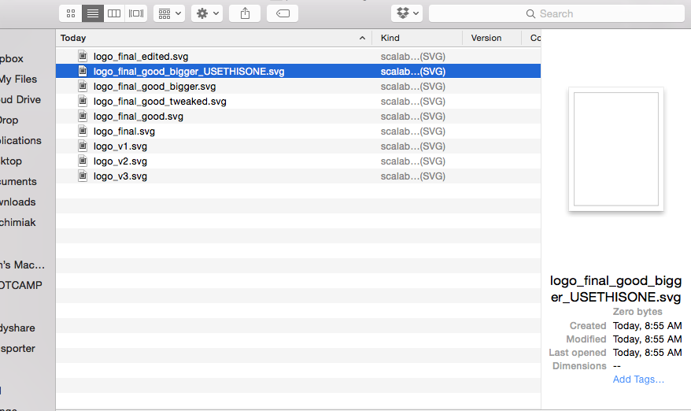

Git
Git
What is Git?
Git is a version control system.
Why do I need version control?
Human attempts at tracking different versions are valiant...
...and destined for failure and frustration.
Other version control systems
- Subversion
- Mercurial
- Team Studio (Microsoft)
- Perforce
- There are many more...
What's the difference?
Branching and Merging

What's the difference?
Branching and Merging
- Context Switching in local branches
- Role-Based Codelines - use branches to organize production code from other day-to-day activities.
- Feature Based Workflow - work on a feature then merge it back into the main line
Distributed Version Control
Allows for geographically separate teams
to collaborate at massive scale
at a quick pace.
Git is Important.
Demo
$ git clone https://github.com/aljachimiak/front-end-cli.git